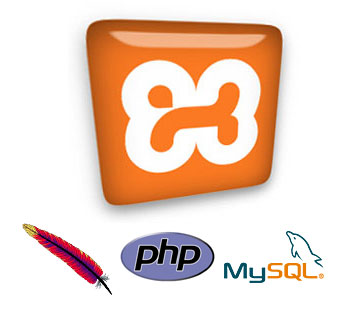

A propos
Passions : Informatique, voyage, moto, ...
Né en l'an : 1991
Languages : Français, Anglais, Espagnol, Chinois
Adresse : Lyon - FRANCE
E-mail : antoine@subit
Outils de travail



Expérences professionnelles
2013 Depuis Avril
► Développeur web
ASCOMEDIA (Agence Web - Champagne-en-Mont-d'Or)
Développement spécifique sur Drupal et Symfony pour application et site web e-commerce
2011/12/13 Novembre 2011 - Avril 2013
► Web Designer
FREE-LANCE (Lyon - Rhône)
Création de sites internet sur Wordpress et E-commerce sur PrestashopCréation de visuels pour support print
2012 Juillet - Août
► Developpeur SEO
PROMOPLUS (Vente d'objets publicitaires – Villeurbane)
Optimisation site existant, Net-linking, Plan SEO, SEM
2011 Novembre - Décembre
► Web Designer
MAIRIE DE PÉRIGNEUX (Périgneux - Loire)
Création graphique, Wordpress, Respect des normes d'accessibilitéFormation
2010/13
► Auto-formation
FORMATION ET APPRENTISSAGE EN AUTO-DIDACTE
- Référencement naturel
- HTML 5
- CSS 3
- Wordpress
- Prestashop
- Responsive
2011/12
► Licence professionnelle Communication Logiciels Libres et Sources Ouvertes
UNIVERSITÉ LYON 2
- Infographie
- Community Management
- Web rédactionnel (Blog de CoLibre)
2009/11
► DUT Services et Réseaux de Communication
UNIVERSITÉ CLERMONT 1 – Antenne du Puy-en-Velay
- Web développement
- Web design
- Gestion de projet
- Communication
- Graphisme
- Vidéo
- C2I → Certificat Informatique et Internet